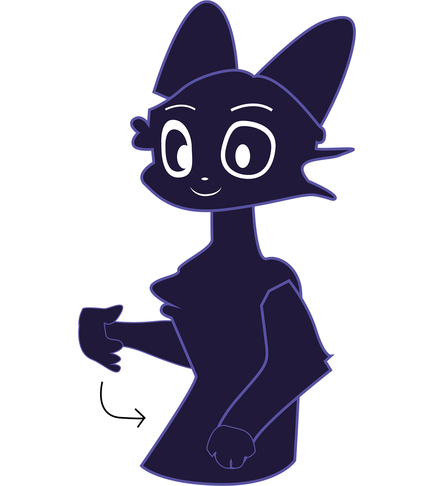
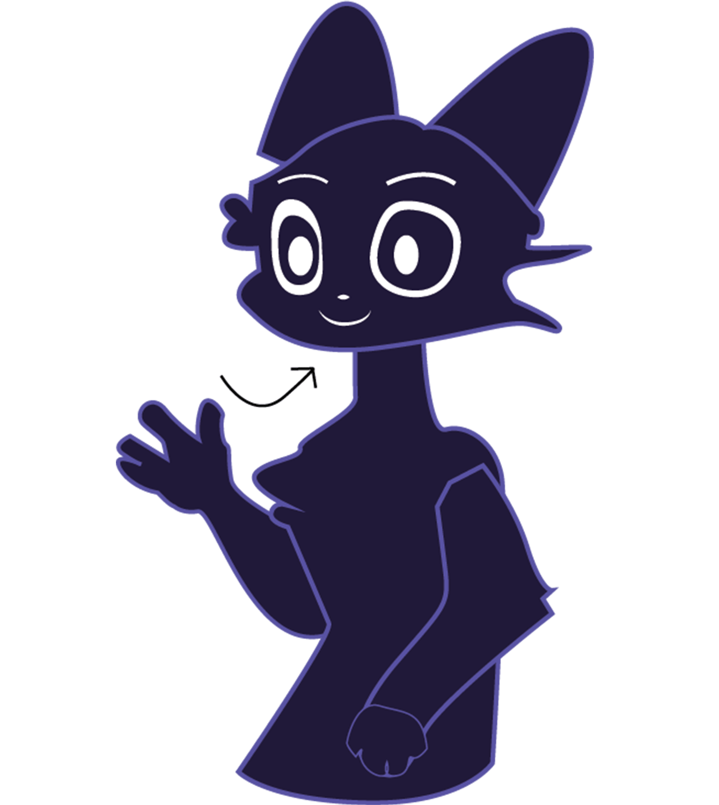
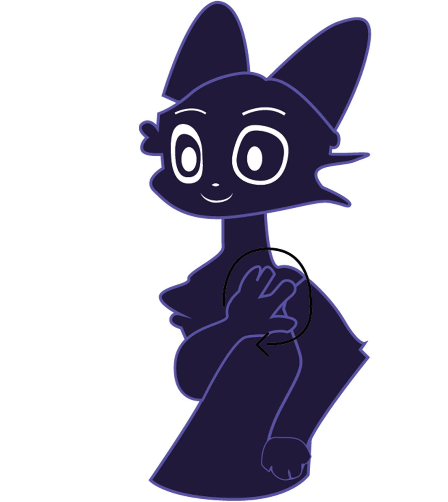
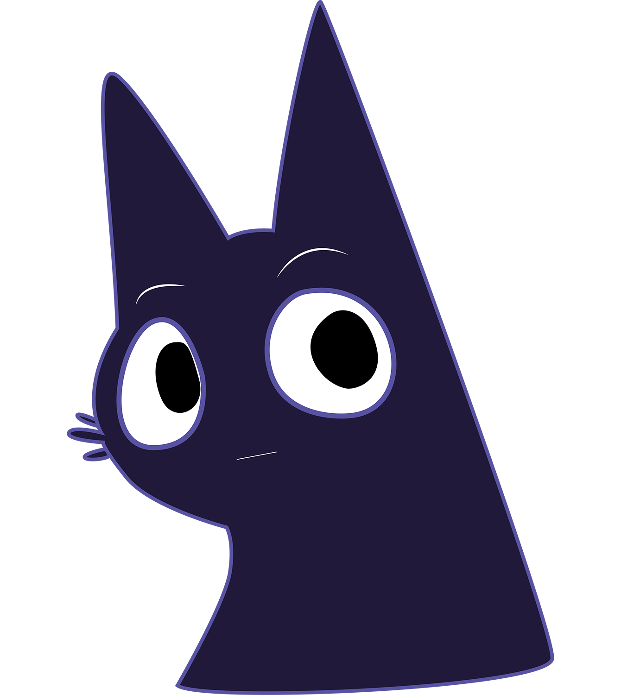

Learning Sign Language Made Friendly & Accessible
Sign Language Perfected is an educational activist website designed to make basic sign language accessible to everyone. Through simple visuals, step-by-step learning, and an inviting design, users can begin understanding communication beyond spoken language.


This project promotes inclusivity and communication equality. Everyone deserves to be understood. By learning even a few signs, we create stronger and more compassionate communities.
Please have fun while learning this new language, sign language. Like any language, it takes time and practice, but it can also be an exciting and rewarding experience. As you learn new signs, you are also learning a new way to communicate and connect with others. Try to enjoy the process, be patient with yourself, and don’t be afraid to make mistakes. Every new sign you learn brings you one step closer to understanding and communicating with the Deaf community. Learning sign language can open the door to new friendships, new perspectives, and a deeper appreciation for different ways people express themselves.

